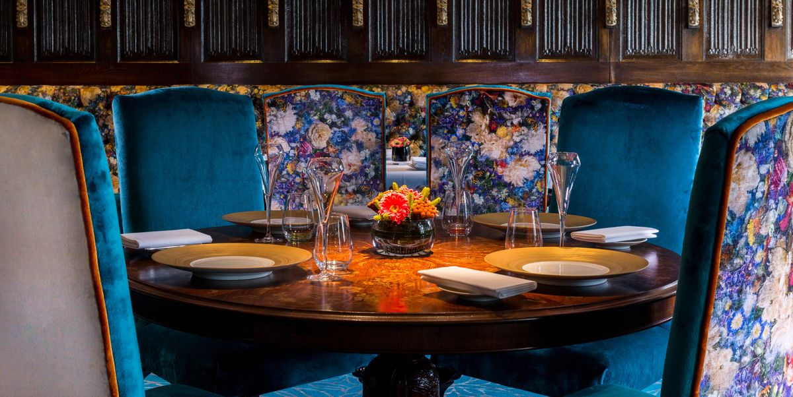

Our Lifestyle membership offers a fast track to luxury living. Tap into our knowledge, expertise and contacts for exclusive access and special invitations. Join the Innerplace community to socialise and network with other like-minded members at our members' events. Let us save you time and help you navigate safely through the new world of the finest restaurants, members clubs and other exclusive places and parties in London - receiving the welcome you deserve.

The Red membership is our premium level of luxury concierge service for high-net-worth individuals and C-Suite directors looking for the ultimate, personalised experience. Tap into our knowledge, expertise and contacts for exclusive access and special invitations.
By strictly limiting numbers, we are able to provide a superior and a truly VIP service with benefits not available at the lifestyle membership level.
Access to the inaccessible with Innerplace
